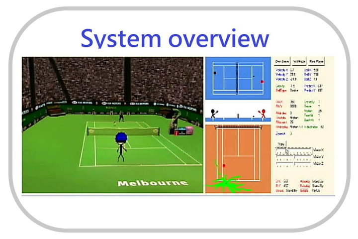
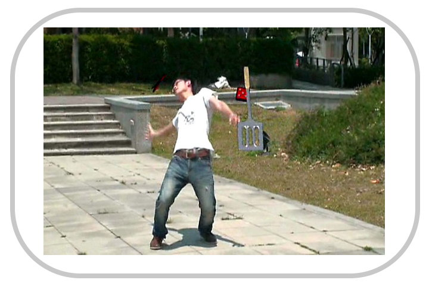
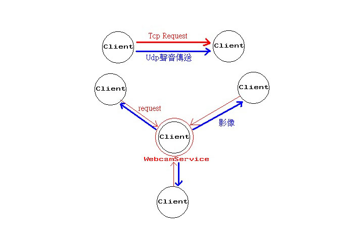

Course Projects
Digital Visual Effects
Graduate Course, National Taiwan University, Spring 2009
- Tennis Game Design with Image Based Visual Effect
- Global motion estimation, Back ground extraction, Bayesian matting, Morphing, Image based rendering, OpenGL

- Panorama Image Construction
- Harris Corner Detection, SIFT, K-D Tree, RANSAC, Cylindrical Warping, Image Blending
- 3D object insertion in video scene
- Structure from motion, Icarus calibration software [1], Blender 3D software


2008 IC/CAD Contest
2008 spring, hold by ministry of education of Taiwan
- Displacement minimization for legalization in standard cell placement
- Dynamic programming, Convex linear programming, NTUplace3 algorithm [2], Abacus algorithm [3]
Discrete Optimization
2008 spring college course in National Taiwan University
- Minimum Rectilinear Steiner Tree (MRST) Problem
- FDP algorithm [4,5], Iterated 1-steiner [6], Refined Single Trunk Tree [7]
Network and Multimedia Lab
Undergraduate Course, National Taiwan University, Spring 2008
- Painting program - LittlePaint.exe
- A program with basic painting functions such as draw line, circle, rectangle and fill color wrote in C#.
- MSN Program
- A messenger program wrote in C#. All user data are saved in server, and the administer of the server can send or broadcast message and control the log-in of all users. The text data, webcam and voice request are sent with TCP, while the video and sound stream of webcam and voice are sent with UDP since they can be lost.

- 3D First-person shooting program
- A first person shooting wrote in C# with MOGRE 3D engine and blender 3D modeling. The gravity is applied in the 3D environment, and the player is been hit by bullet or bomb with 3D collision detection. The server broadcast the position and direction of each player with TCP.
Introduction to Computer
Undergraduate Course, National Taiwan University, Spring 2005
- Phone Java game - mobileFire.jar
- A java game developed in java 2 wireless toolkit. The game thread has states such as waiting, sleeping, blocked and running as a mobile phone application.
Multi-medium Computing Environment
Graduate Course, National Taiwan University, Spring 2009
- Media player - DirectShow.zip
- A media player that is capable of playing video and audio files, wrote in C# with DirectX SDK. There are some function icons on the UI such as time line bar, speed up/down and stereo sound.
Information Theory and Coding Technique
Graduate Course, National Taiwan University, Spring 2009
- MPEG1 decoder - ITCT_MPEG1.zip
- A program that can decode the I and P frame of MPEG1 video file. It was wrote in Visual C++ with reference to MPEG standard [8] and did not call any kinds of library.
- JPEG decoder - PHW2.zip
- A program that can decode the baseline JPEG file and convert it to BMP file. It was wrote in C++ with reference to JPEG standard [9] and did not call any kinds of library.
Video Communications
Graduate Course, National Taiwan University, Spring 2010
- Motion estimation research
- Implemented motion estimation algorithms : Orthogonal search, 2D logarithmic search, fast full search (FFS) [10], Modified predictive diamond search (MPDS) [11] and compared their PSNR performance and execution time. The result showed that MPDS has a good balance between time and PSNR, and FFS works well in complex video scenes.
- Vector quantization
- Compressed images by vector quantization with LBG algorithm under different block size and codebook size. The compression rate can reach 93% while the PSNR remains 27.5 ~ 31.0.
References
- [1] http://aig.cs.man.ac.uk/research/reveal/icarus/
- [2] Tung-Chieh Chen, Zhe-Wei Jiang, Tien-Chang Hsu, Hsin-Chen Chen, and Yao-Wen Chang; NTUplace3: An Analytical Placer for Large-Scale Mixed-Size Designs with Preplaced Blocks and Density Constraints; IEEE TRANSACTIONS ON COMPUTER-AIDED DESIGN OF INTEGRATED CIRCUITS AND SYSTEMS 2007
- [3] Peter Spindler, Ulf Schlichtmann, Frank M. Johannes; Abacus: Fast Legalization of Standard Cell Circuits with Minimal Movement; ISPD 2008
- [4] F. K. Hwang; On Steiner Minimal Trees with Rectilinear Distance; SIAM Journal on Applied Mathematics 1976
- [5] Joseph L. Ganley and James P. Cohoon; A Faster Dynamic Programming Algorithm for Exact Rectilinear Steiner Minimal Trees; Fourth Great Lakes Symposium on VLSI, 1994
- [6] A. Kahng, G. Robins; A new class of Steiner tree heuristics with good performance: the iterated 1-Steiner approach; ICCAD 1990
- [7] Hongyu Chen , Changge Qiao , Feng Zhou , Chung-Kuan Cheng; Refined Single Trunk Tree: A Rectilinear Steiner Tree Generator for Interconnect Prediction; Proceedings of the 2002 international workshop on System-level interconnect prediction
- [8] MPEG International Standard Part 2 - Visual (ISO 11172-2)
- [9] JPEG International Standard (T.81E).
- [10] Brunig, M., Niehsen, W.; Fast full-search block matching; IEEE Transactions on Circuits and Systems for Video Technology 2001
- [11] Alexis M. Tourapis, Guobin Shen, Ming L. Liou, Oscar C. L. Au, Ishfaq Ahmad; New predictive diamond search algorithm for block-based motion estimation; Proc. SPIE 4067, Visual Communications and Image Processing 2000
2013 © Fu-Chen Chen | Personal Website | E-mail: squallinck gmail.com
gmail.com